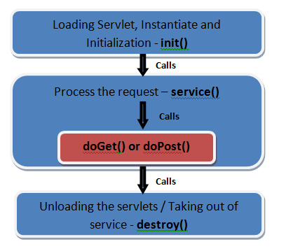
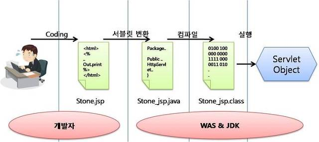

들어가며
약 4년 동안 개발하면서, Spring core에 대한 공부를 하지 않고, "이렇게 코딩하면 이렇게 동작하네~" 라는 생각만 가지고 개발을 해왔었다. 근 1~2달 간 Spring core 부분에 관심을 가지며 동작 원리에 대한 지식을 습득하였다. 그러면서 "이게 이래서 이렇게 동작하는구나~" 라고 개인적으로 Spring에 대한 insight를 높일 수 있었고, 이런 점들은 실제 개발 시 뚜렷하게 나타났다.
최근 Dispatcher Servlet에 대한 Spring MVC에 대한 공부를 진행하면서, Spring 이전 기술인 Servlet에 대해 한번은 공부하고 넘어가야 겠다고 생각했다. 이번 기회에 4년동안 이름만 들어봤던 Servlet에 대한 포스팅을 써보게 되었다.
Servlet
Servlet이 뭐지? 대학 시절 JSP를 배웠지만, 교수님이 Servlet에 대한 내용을 강의를 하지 않았다. (교수님이 약간 프로그래밍 지식이 부족하신 분이다.) 그 때 그랬으면 스스로 Servlet에 대한 스터디라도 해봤어야 했는데... 이제와서 알아보게 되었다.
Servlet의 정의에 대해 찾아보게 되었다. (출처 : wikipedia)
자바 서블릿(Java Servlet)은 자바를 사용하여 웹페이지를 동적으로 생성하는 서버측 프로그램 혹은 그 사양을 말하며, 흔히 "서블릿"이라 불린다. 자바 서블릿은 웹 서버의 성능을 향상하기 위해 사용되는 자바 클래스의 일종이다.
결국은 웹 서버에서 돌아가는 Java 코드라는 뜻이다.
Java 코드 이긴 코드인데 무작정 연습예제 만들 듯이 짜는 코드가 아니다.
HttpServlet 이라는 Class를 상속하여 만든 Class를 Servlet Class로 사용 할 수 있다.
Servlet의 특징
- Servlet이란 Java 기반의 웹 어플리케이션 프로그래밍 기술
- 흔히 Java로 만든 CGI(Common Gateway Interface)라고들 한다.
- 클라이언트 요청 (request)에 대해 java코드로 된 로직을 수행 하고 응답(Response)을 돌려준다.
- Http Method (GET, POST, PUT, DELETE)에 대해 지원한다. (doGet, doPost, doPut, doDel 메소드를 상위 클래스인 HttpServlet 클래스에서 제공한다)
- 클라이언트 요청 시, 별도의 Thread가 생성되어 로직을 수행한다. (WAS 내의 Thread pool의 Thread 객체를 이용한다.)
- Servlet 객체는 실제로 WAS load시 하나의 Servlet 객체가 생성되어 Memory에 올라간다 (내부적으로 Sington을 구현하고 있지는 않다고한다.) 여기서 주의 해야 할 내용은 클라이언트 요청 별로 Thread가 생성 되기 때문에 하나의 Servlet에 동시 다발적으로 여러 Thread에 대한 접근이 이루어지게 된다. 따라서 Servlet에 대한 코드는 멀티스레드 환경에 대한 동기화처리가 필요하다.
- 요즘은 거의 Servlet을 사용하지는 않는다. 특히 Spring에서는 Spring MVC라는 강력한 구조가 있기 때문에 Spring에서는 웬만하면 Servlet생성을 하지 않는다. (오히려 Servlet을 생성하는게 더 귀찮다. 별도로 설정해야 되고, Dispatcher Servlet에서 지원하는 강려크(?) 한 기능을 사용하지 못한다.)
- MVC에서 컨트롤러로 이용됨..
Servlet Container
Servlet이라는 Java Class를 만들었으면, 당연히 이 Class를 실행 시켜주는 프로세스가 있어야 하지 않을까?
당연히 있다. WAS라고 불리우는 프로그램이 있다.
Java 진영에서 자주 사용하는 WAS는 단연 으뜸으로 Apache Tomcat이 있다.
(다른거로는 Jeus나, jBoss 같은 것들이 있다. 하지만 Apache Tomcat이 Spring, JSP진영에서는 거의 표준이다 싶이 사용되니 Apache Tomcat을 기준으로 적었다.)
WAS에는 Servlet들을 관리 하는 Servlet Container가 있고 이러한 일들을 해준다.
-
Web Server (apache, nginx)와의 통신 지원
- 클라이언트 요청(Request)에 대한 Socket 통신 지원
-
Servlet Lifecycle 관리
-
Client 접근 URL에 대한 Servlet Mapping
-
클라이언트 요청(Request)에 대한 멀티 스레드 관리
-
선언적인 보안관리
- 보안에 대한 코드를 Servlet 내부에 작성하지 않아도 된다.
- Servlet Filter와 같은 Filter에서 보안에 대한 처리가 가능하기 때문
- DD (배포 서술자 : Deploy Descriptor (web.xml))에 보안 관련 설정을 할 수 있다. 대표적인 예로 Spring Security가 있다.
Servlet LifeCycle

Servlet의 LifeCycle은 3단계로 이루어 진다.
- init()
- WAS Load후 최초로 Servlet에 대한 요청이 들어올 때 실행 된다.
- 주로 Servlet 객체에 대한 초기화 로직을 작성한다.
- 실행 중 Servlet의 코드가 변경 될 경우, 기존 Servlet을 Destroy 시키고 다시 서블릿 생성과 동시에 init()이 실행
- service()
- Servlet 객체 생성 이후 GET, POST, PUT, DELETE 메소드에 대한 메소드가 실행된다. (doGet(), doPost(), doPut(), doDel())
- destroy()
- WAS shutdown 시 호출 된다.
- 주로 Servlet 객체에서 사용하던 자원의 해제 용도로 사용된다
- 자원 해제 된 객체는 JVM의 Garbage Collector에서 처리한다.
Servlet 설정하기
Servlet class 생성하기
1
2
3
4
5
6
7
8
9
10
11
12
13
14
15
16
17
18
19
20
21
22
23
24
25
26
27
28
29
30
31
32
33
34
35
36
37
38
39package com.example.springstudy.demo3.servlet;
import lombok.extern.slf4j.Slf4j;
import javax.servlet.ServletException;
import javax.servlet.http.HttpServlet;
import javax.servlet.http.HttpServletRequest;
import javax.servlet.http.HttpServletResponse;
import java.io.IOException;
4j
(name="demoServlet", url-pattern="/servlet/demo")
public class DemoServlet extends HttpServlet {
protected void doGet(HttpServletRequest req, HttpServletResponse resp) throws ServletException, IOException {
log.info("doGet() 실행실행실행!!!");
Thread thread = Thread.currentThread();
log.info("Thread ID : " + thread.getId());
super.doGet(req, resp);
}
protected void doPost(HttpServletRequest req, HttpServletResponse resp) throws ServletException, IOException {
super.doPost(req, resp);
}
public void destroy() {
log.info("Servlet destroy()");
super.destroy();
}
public void init() throws ServletException {
log.info("Servlet init()");
super.init();
}
}
@WebServlet 어노테이션을 이용하면 web.xml이나 별도의 Java config 설정없이 Servlet을 등록 할 수 있다. (단, Spring boot - Embedded WAS에서는 해당 설정이 잘 안먹는다.)
기본적으로 Servlet 클래스 생성은 HttpServlet 클래스를 상속 받아 생성한다.
HttpServlet내의 init, destroy, doGet, doPost에 대한 Override 후 기능을 확장하도록 한다.
web.xml 기반 설정
1
2
3
4
5
6
7
8
9<servlet>
<servlet-name>demoServlet</servlet-name>
<servlet-class>com.example.springstudy.demo3.servlet.DemoServlet</servlet-class>
</servlet>
<servlet-mapping>
<servlet-name>demoServlet</servlet-name>
<url-pattern>/servlet/demo</url-pattern>
</servlet-mapping>
web.xml에 servlet 클래스를 선언하고 <servlet-mapping> 태그를 통해 url-pattern이나 init-data와 같은 메타 데이터를 추가 할 수 있다.
Java Config 기반 설정
1
2
3
4
5
6
7
8
9
10
11
12
13
14
15
16
17
18package com.example.springstudy.demo3.config;
import com.example.springstudy.demo3.servlet.DemoServlet;
import org.springframework.boot.web.servlet.ServletRegistrationBean;
import org.springframework.context.annotation.Bean;
import org.springframework.context.annotation.Configuration;
public class DemoServletConfig {
public ServletRegistrationBean demoServletRegistrationBean() {
ServletRegistrationBean demoServletRegistrationBean = new ServletRegistrationBean();
demoServletRegistrationBean.setServlet(new DemoServlet());
demoServletRegistrationBean.addUrlMappings("/servlet/demo");
return demoServletRegistrationBean;
}
}
@Configuration 어노테이션을 이용하여 Java config 설정을 할 수 있다. ServletRegistrationBean을 생성하여 등록하고자 하는 Servlet 클래스와 url-pattern과 같은 메타 정보를 설정 할 수 있다.
JSP vs Servlet
JSP와 Servlet의 차이점
- JSP는 html 파일에 스크립트릿으로 Java 코드가 들어간 형태
- Servlet은 html 태그가 out.println("<html>") 형태로 들어간 형태
JSP -> Servlet 변환 과정

Servlet의 최종 형태는 out.println("<html>") 과 같은 형태로 html 파일을 인코딩 해야 하는데, 가독성도 떨어지고 유지보수 성도 좋지 않다. 그러한 번거로움을 jsp가 대신 해준다고 볼 수 있다.
참조
http://mangkyu.tistory.com/14 http://breath91.tistory.com/entry/Servlet-%EC%9D%B4%EB%9E%80-%EB%AC%B4%EC%97%87%EC%9D%B8%EA%B0%80 http://til0804.tistory.com/25